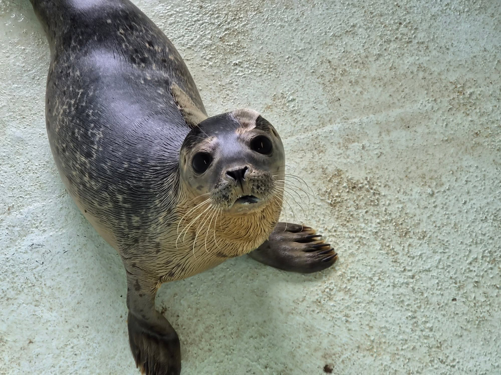
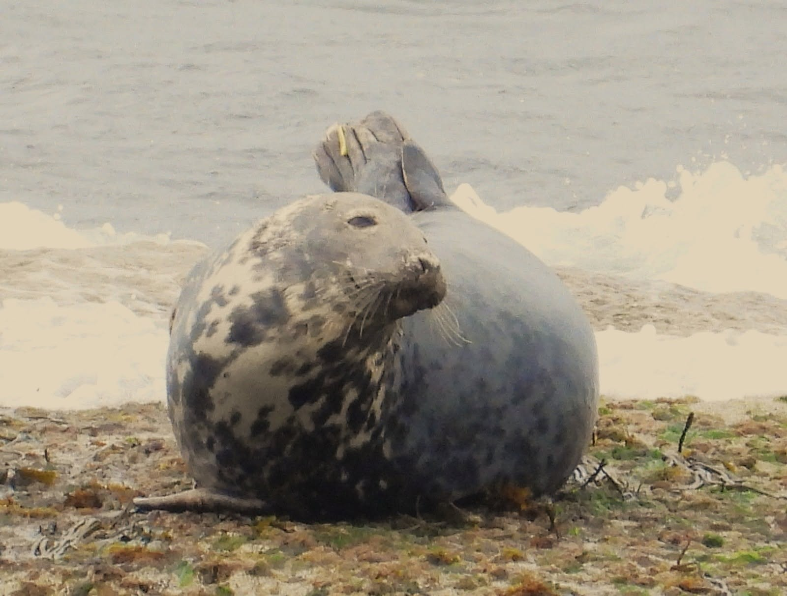

A safe place to recover
Rescued seals receive treatment and rest. Quiet spaces help reduce stress, while donated wetsuit material can offer comfort to younger pups.
Our hospital. Their second chance.
We’re Tynemouth Seal Hospital: a volunteer-led charity helping sick and injured seals recover on the North East coast.

Rooted in the North East
Every patient has a different story. The aim is always to give them the best chance of returning to the wild.
Based at Tynemouth Aquarium, the hospital brings together volunteers who care for vulnerable seals. Since opening in 2017, it has helped pups through treatment and rehabilitation towards release.
Our patients include grey and common seals. Some arrive underweight; others need help with wounds or illness. Their progress is reflected in small milestones, from feeding well to building strength in the water.
We are a registered charity working for the conservation and protection of seals through rescue, treatment, rehabilitation and release.
Registered charity 1197677 ↗From rescue to release
Time, patience and a focus on life beyond the hospital.
Rescued seals receive treatment and rest. Quiet spaces help reduce stress, while donated wetsuit material can offer comfort to younger pups.
Feeding, weight gain and time in the water mark the journey towards recovery. Xana’s short tub sessions and Kraken’s appetite are part of their individual stories.
Human contact is kept limited. Before release, recovering seals may swim together, helping them readjust to life alongside other seals.
Flipper tags help identify former patients and trace their records if they need care again. Sightings can tell us where their next chapter takes them.
A shared effort
Care begins before a seal reaches a pen. Rescue organisations, triage teams, volunteers and supporters each play a part.
Our patients’ stories include rescues by British Divers Marine Life Rescue (BDMLR) and Blyth Wildlife Rescue, and initial care at North East Seal Triage. The Aquarium also describes referrals following reports to the RSPCA and BDMLR.
Tynemouth Aquarium provides the hospital’s home and supports our patients with fish. Donations, supplies, fundraising and merchandise purchases give our wider community ways to get involved.

Why we do it
Isla arrived in March 2019 with lungworm, weighing just 20kg. By May, she was fit for release at 34.3kg.
Her yellow tag has since helped identify her in Yorkshire and back at St Mary’s Island. Those returning visitors mean so much to the people who cared for them.
Read our success stories →The people behind the care
Different backgrounds, a shared love of wildlife. Get to know some of the people who help our patients on their way.
Good to know
You can visit Tynemouth Aquarium, but the seal hospital itself is not open to visitors. Our patients need a quiet environment while they recover.
To plan your visit and book tickets to the Aquarium, visit its website.
Book Aquarium tickets ↗No. The Aquarium’s resident seals and the hospital’s rescued patients have different roles. Our hospital patients are cared for with the aim of returning them to the wild.
Keep your distance and keep people and dogs away. Seals rest on land and do not always need help. If you are concerned, call BDMLR on 01825 765 546 for expert advice.
You can donate through JustGiving, buy supplies from our wishlist, visit the merchandise shop or organise fundraising. To ask about helping the team, email the hospital.
Explore ways to help →Be part of their next chapter
Every act of support helps the people caring for our seal patients.